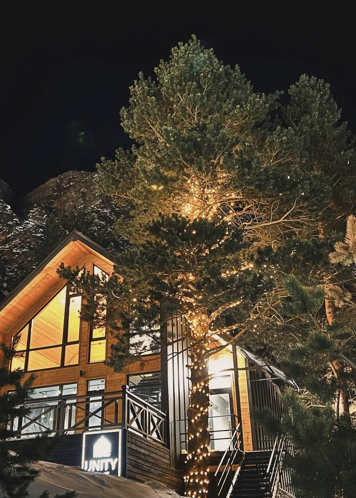
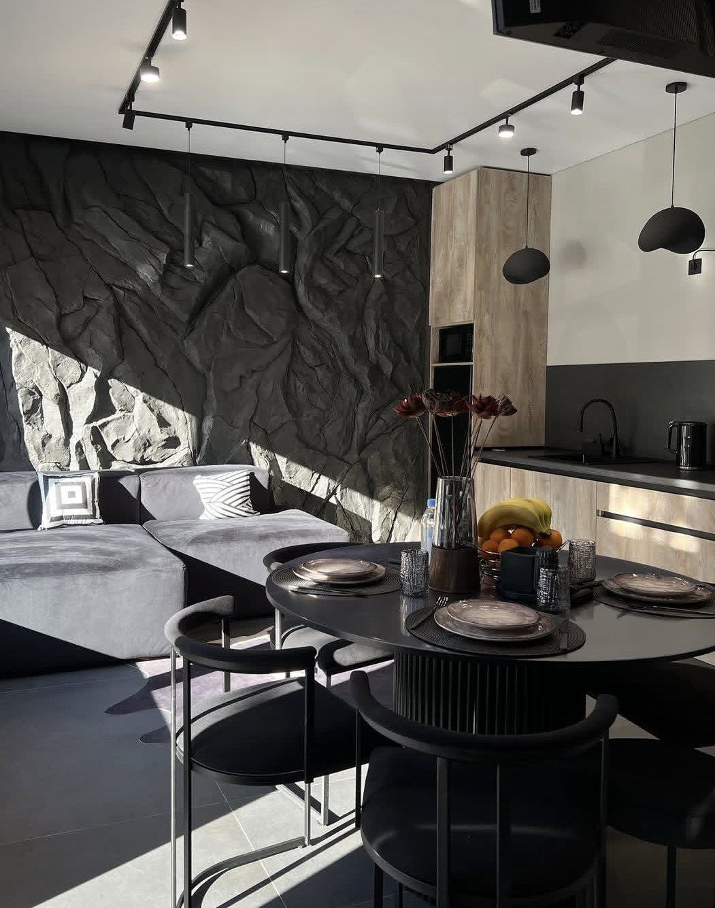
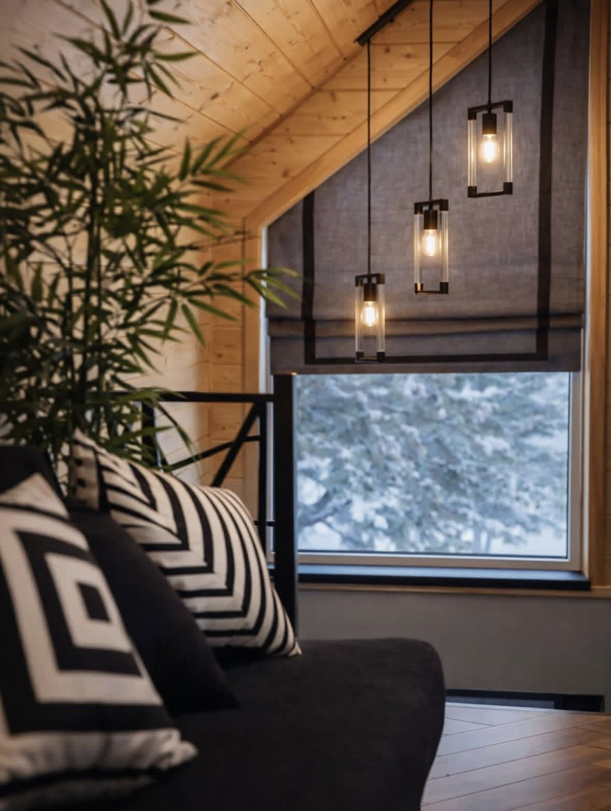
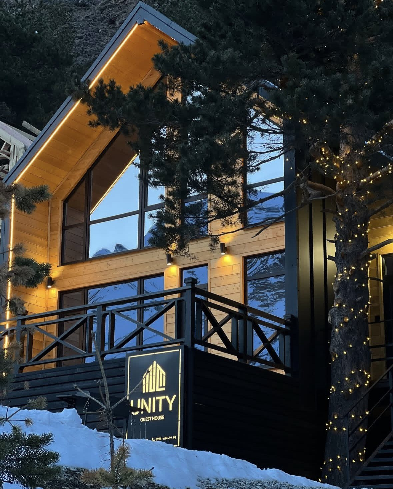
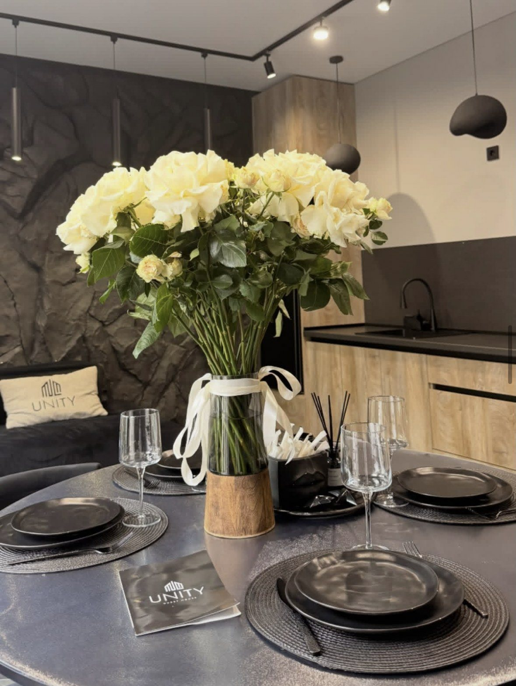
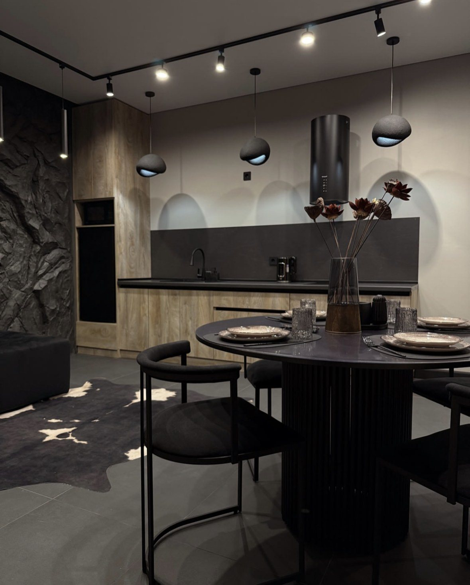

Главное в пяти пунктах
Дом, который запоминают. Barn house под сосной в гирлянде собрал 123 лайка и 58 репостов, а гостиная со скальной стеной 116 лайков. У соседей в Азау на фото в основном типовые интерьеры.
Три дома живут в трёх аккаунтах: @unity_azau, @unity_aframeazau и @unity_cheget. Гость, который выбирает, пишет в каждый и спрашивает одно и то же: свободно ли, сколько стоит, есть ли трансфер.
Соседи на Азау и в Терсколе продают через площадки: Островок, Яндекс Путешествия, 101hotels. По запросу «UNiTy Азау» я не нашла ни сайта, ни карточек на площадках.
Одна страница на три дома решает обе задачи. Гость сам видит свободные даты и цену по сезону, добавляет трансфер и вносит предоплату. Вы видите загрузку всех домов в одном календаре.
Сайт делается за 7–10 дней, то есть успевает к январским датам и мартовским праздникам. Ссылка встанет в шапку всех трёх аккаунтов.
Что у вас уже сильное
- Интерьер с характером. Чёрная скальная стена во всю гостиную, круглый стол на ребристой ножке, трековый свет, мансарда с деревянным потолком и окном на заснеженную сосну. Такие кадры сами просятся на первый экран.
- До канатки пешком. Про barn house в посте так и написано: «в шаговой доступности 🏂🚡». Для лыжника это главный вопрос, и на сайте ответ будет в первой строке.
- Большая компания в одном доме. Barn house на 7 человек: семья с детьми или друзья, которые едут кататься вместе.
- BBQ и трансфер уже в шапке. Гостю не нужно искать машину из аэропорта отдельно, а вечер после склона есть чем занять.
- Узнаваемый бренд. Логотип на вывеске, подушках, меню на столе. Белые розы и сервировка к заезду. Так выглядит место, куда возвращаются.
- 3 239 подписчиков и живые подписи. Пост про студию с припиской, что кухню переигрывали «ой как много раз» и розетка всё равно оказалась не там, читается тепло и по-человечески.






«Наша студия 🥰❤️ Ps кухню мы переигрывали ой как много раз 😂 в итоге розетка оказалась ни там где нужно 🤪»Ваш пост в @unity_azau, 23 января 2025
Фото из вашего Instagram @unity_azau и совместных постов с @unity_aframeazau
Что сейчас мешает
- Три аккаунта на три дома. Гость, который сравнивает, листает три профиля и пишет в каждый. Вы отвечаете в трёх директах и в WhatsApp на одни и те же вопросы.
- Свободные даты и цены есть только в переписке. Вопрос «свободно на 14–17 февраля, нас шестеро?» каждый раз разбирается вручную, а в сезон таких вопросов десятки в день.
- Кто ищет «барнхаус Азау» или «A-frame Чегет» в Яндексе, видит карточки соседей на Островке и Яндекс Путешествиях. Ваших домов в этой выдаче я не увидела.
- Трансфер указан в шапке, но откуда, на сколько человек и сколько стоит, не написано. Об этом снова спрашивают в личке.
- Условия лежат в хайлайтс «ВАЖНО!». Новый гость их обычно не открывает, поэтому про заезд, залог и животных пишут отдельно.
Что спрашивают перед бронью
Две группы вопросов, и на обе сайт отвечает до того, как гость напишет вам.
Даты и деньги
Дом и место
Кто ещё сдаёт дома рядом
Legend07
mirturbaz.ruБлиже всех к вам по формату: A-frame на 60 м² и барнхаус на 70 м², 4 места плюс 2 дополнительных. Кофемашина, кухня, парковка, рядом канатные дороги Эльбрус-1 и Рома-1. Цены в карточке не показались.
Adara Elbrus
travel.yandex.ruШале в шаговой доступности от канатной дороги. Завтрак по меню, выезд до 12:00, без животных. 4,6 по 12 отзывам на Яндекс Путешествиях, гости отмечают стильный интерьер.
Kogutai Wood Cabin
travel.yandex.ruДеревянный дом на 60 м². Терраса с беседками, мангальная зона и отдельная комната для снаряжения. Оценка 5,0 на Яндекс Путешествиях.
Ozon Azau Shales Chalet
ostrovok.ruШале в центре курорта, по данным Островка около 74 м до гондолы. Цена от 15 851 ₽ за ночь, точная после выбора дат. 10 из 10 по двум отзывам.
Malkar house
101hotels.comКоттеджи и A-frame на 56 м² с видом на Чегет, около 1,2 км до канатной дороги. От 7 020 ₽ за ночь, залог 5 000 ₽, оплата на месте. Рядом баня и парк альпак. 9,8 по трём отзывам.
Freeride A-Frame
otello.ruЧастный A-frame на 6 гостей, около 700 м от центра посёлка. Без завтрака, без животных. Цену показывают только после выбора дат.
Описания собраны по открытым карточкам и поисковой выдаче на 20 ноября 2026. Цены и условия у домов могли измениться.
Что стало нормой
- Метры или минуты до канатной дороги в первой строке
- Площадь, число мест и что есть в доме
- Календарь и цена после выбора дат
- Рейтинг и отзывы рядом с ценой
- Условия сразу: залог, животные, выезд
Чего я у них не встретила
- Своего сайта: в выдаче только карточки на площадках
- Несколько домов одного хозяина в одном календаре
- Трансфер, который добавляется к брони одной галочкой
- Интерьер, который узнают по одному кадру
Что должен делать ваш сайт
Показывать три дома рядом
Фото, сколько гостей, спальни, сколько идти до канатки. Гость сравнивает за минуту, а не листает три профиля.
Открывать свободные даты
Календарь по каждому дому. Занято на Азау, значит рядом видно, что свободно на Чегете.
Называть цену по сезону
Праздники, высокий сезон, будни. Сумма за выбранные ночи считается сама.
Добавлять трансфер
Откуда, на сколько человек и сколько стоит, одной галочкой при брони.
Брать предоплату
Онлайн, с понятными условиями: заезд, выезд, залог, отмена. Без «скиньте на карту».
Собирать загрузку для вас
Все три дома в одном календаре, каждая бронь приходит в WhatsApp готовым сообщением.
Было и стало
Так обычно выглядит путь от первого вопроса до брони, и так он выглядит с сайтом. Имена и даты условные.
Два аккаунта, четыре сообщения, а до цены ещё не дошли. Тем временем гость открыл Островок.
Одно сообщение в WhatsApp. Вам остаётся подтвердить и отметить даты.
Что можно предложить вашим гостям
Это варианты на обсуждение, берите то, что подходит.
Сертификат к Новому году
Ночь или выходные в UNiTy в подарок паре или другу-лыжнику. Покупают и оплачивают прямо на сайте.
Дом и трансфер одним пакетом
Из аэропорта и обратно, цена видна сразу в брони. Гостю не нужно искать водителя отдельно.
Ранняя бронь на март и май
Небольшая скидка тем, кто бронирует за месяц. Праздники заполняются заранее, а вы раньше видите загрузку.
BBQ-вечер под сосной
Мангал и набор к приезду как опция при брони. У вас BBQ уже в шапке, осталось сделать его кнопкой.
Что нужно уточнить
- Сколько у вас домов и где каждый: barn house и A-frame на Поляне Азау, дом на Чегете? «Студия» из поста это отдельный вариант?
- Сколько гостей и спален в каждом доме? Сколько минут пешком до канатной дороги?
- Цены за ночь: праздники, высокий сезон, будни и лето. Есть ли минимальный срок?
- Трансфер: откуда (Минеральные Воды, Нальчик), на сколько человек и сколько стоит?
- Какая предоплата и условия отмены? Что из хайлайтс «ВАЖНО!» вынести на сайт: заезд, выезд, залог, животные?
- Где сейчас ведёте брони: в блокноте, в таблице, в сервисе? Есть ли карточки на Островке, Авито или Суточно?
- На какой номер принимать брони с сайта? На вывеске у дома виден другой номер, он тоже ваш?
- Название ИП для политики конфиденциальности и договора брони.